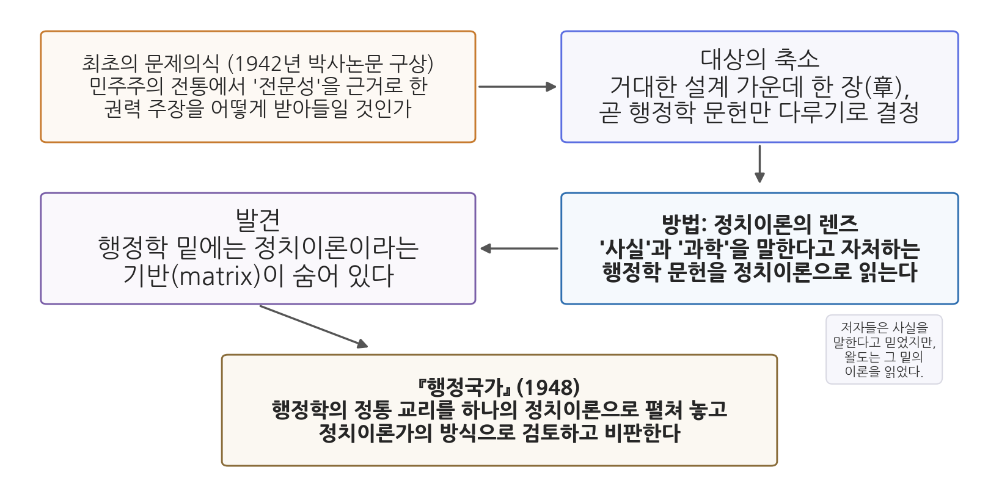
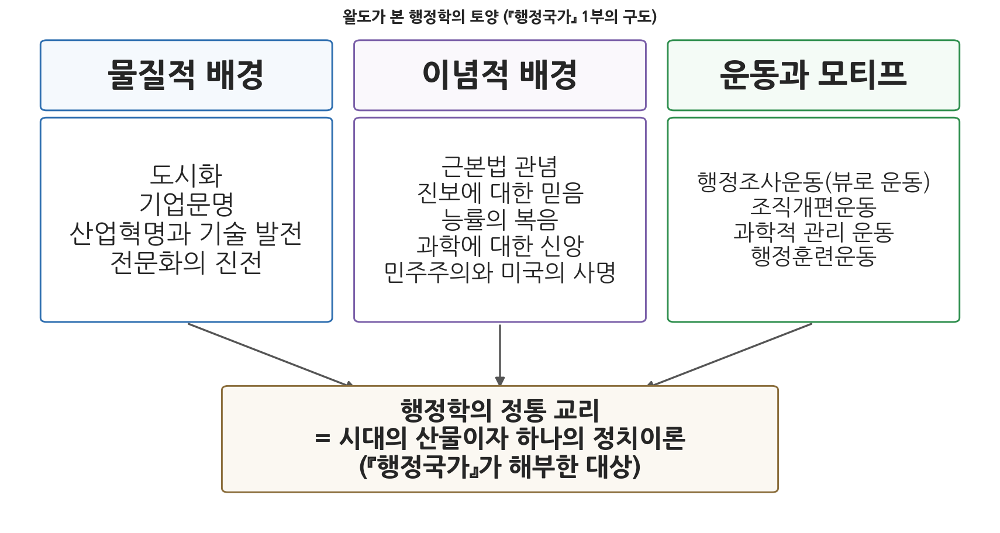

11주차 1차시. 행정국가의 재성찰 (1): 왈도의 행정국가 다시 보기 I: 시대와 사상
정치이론의 렌즈로 행정학 문헌을 자세히 들여다보니, 역설적이게도 거기에는 정치이론이라는 기반이 놓여 있음이 분명해 보였다. (드와이트 왈도, 「행정국가 다시 보기」)
이 장에서 배우는 것
1948년, 서른다섯 살의 정치이론 전공자가 책 한 권을 내놓았다. 제목은 『행정국가』. 내용은 도발적이었다. 윌슨에서 귤릭에 이르는 행정학 60년의 성과를 향해, 당신들이 "사실"과 "과학"이라고 불러 온 것은 사실 하나의 정치이론이며, 정치이론이라면 마땅히 정치이론으로서 검토받고 비판받아야 한다고 선언한 것이다. 행정학의 대표 학술지는 서평에서 이 책에 맹공을 퍼부었다. 저자 자신의 회고에 따르면, 어느 정도의 존중과 수용을 얻는 데 10년이 걸렸다. 그러나 오늘날 이 책은 행정학의 자기이해를 바꾼 고전으로 꼽힌다.
10주차를 떠올려 보자. 로버트 머튼은 관료제라는 기계가 안에서부터 어떻게 뒤틀리는지를 보여 주었고, 허버트 사이먼은 행정학이 자랑하던 "원리"들이 서로 충돌하는 격언에 불과하다고 폭격했다. 이번 주에 만나는 드와이트 왈도(Dwight Waldo)의 공격은 각도가 다르다. 머튼이 조직의 안을, 사이먼이 논리의 안을 파고들었다면, 왈도는 행정학이라는 학문 전체를 바깥에서, 곧 정치철학의 자리에서 내려다보았다. 이 장에서 읽는 원전은 왈도가 1965년에 쓴 회고 에세이 「행정국가 다시 보기(The Administrative State Revisited)」의 전반부다. 자신의 책이 어떻게 태어났고, 무엇을 겨냥했으며, 20년 뒤에 보니 무엇이 남았는지를 저자가 직접 말한다.
이 장에서 구체적으로 다음을 배운다.
- 왈도가 누구이며, 왜 행정이론을 정치이론으로 읽었는지
- 『행정국가』가 어떤 문제의식(전문성과 민주주의의 긴장)에서 태어났는지
- 왈도가 행정학의 토양으로 지목한 물질적·이념적 배경과 개혁운동
- 능률이 중립적 기준이 아니라 하나의 신앙, 곧 이데올로기였다는 비판의 뜻
- 1965년의 왈도가 자신의 책을 어떻게 다시 평가했는지
이 장은 하나의 질문을 따라간다. "행정학은 자신이 과학이라고 믿었다. 그 믿음의 밑바닥에는 무엇이 있었는가?"
1.1 왈도의 생애와 문제의식을 본다 → 1.2 원전 강독으로 『행정국가』의 기원과 수용을 읽는다 → 1.3 행정학을 낳은 물질적·이념적 배경과 개혁운동을 살핀다 → 1.4 능률 이데올로기 비판의 출발점을 확인한다 → 1.5 현대 행정에의 함의를 정리한다. 능률 비판의 본론과 민주행정론은 다음 차시(11주차 2차시)에서 이어진다.
1.1 왈도와 행정이론의 정치철학
정치이론 전공자, 행정학에 들어오다
드와이트 왈도(Dwight Waldo, 1913-2000)는 미국의 행정학자다. 그러나 출발은 행정학이 아니었다. 그의 주된 관심과 전공은 정치이론, 곧 플라톤에서 루소로 이어지는 정치사상의 전통이었다. 그는 정치이론가 프랜시스 W. 코커에게 배우기 위해 예일대학교로 갔고, 그 지도 아래 1942년에 박사학위 논문을 제출했다. 논문 제목은 「미국 행정학 문헌의 이론적 측면」. 이 논문을 대폭 압축하고 다듬어 1948년에 출판한 책이 『행정국가: 미국 행정의 정치이론(The Administrative State)』이다.
경력의 결도 남달랐다. 왈도는 논문을 쓴 뒤 제2차 세계대전 기간 4년을 연방정부 안팎에서 일했고, 전쟁이 끝난 뒤 정치이론을 가르치는 조건으로 캘리포니아 대학교에 부임했다. 그런데 실제로는 정치이론을 제외한 온갖 과목을 가르치다가, 책이 나온 1948년 무렵에는 행정학에 정착하게 되었다. 본인의 회고에 따르면, 그는 행정학 과목을 한 번도 수강한 적이 없었다. 행정학 바깥에서 온 사람이 행정학의 고전을 썼다는 이 사정은, 곧 읽게 될 원전의 어조와 관점을 이해하는 열쇠가 된다.
왈도의 영향력은 책 한 권으로 끝나지 않았다. 1952년에는 사이먼과 학술지 지면에서 정면으로 맞붙었고(다음 차시에서 다룬다), 1968년에는 미노브룩 회의(Minnowbrook Conference)를 열어 젊은 학자들과 함께 "적실성 있는 행정학" 논의를 촉발했다. 이 회의는 12주차에서 배울 신행정학의 산실이 된다. 요컨대 왈도는 행정학의 한복판에서 반세기 동안, 행정학이 스스로를 어떤 학문으로 이해해야 하는가라는 질문을 던진 사람이다.
행정국가(administrative state)는 국가의 활동에서 행정이 차지하는 비중과 역할이 크게 확대되어, 관료제와 행정기구가 통치의 중심에 서게 된 현대 국가를 가리킨다. 9주차에서 보았듯 미국에서는 뉴딜을 거치며 행정국가가 제도로 굳어졌다. 왈도의 책 제목이기도 한 이 말은, 행정이 더 이상 정치의 단순한 도구가 아니라 그 자체로 정치적 성격을 갖는 권력이 되었다는 진단을 담고 있다.
우리 교재에 수록된 원전은 『행정국가』(1948) 본문이 아니라, 왈도가 17년 뒤에 쓴 에세이 「행정국가 다시 보기」(Public Administration Review, 25권 1호, 1965)다. 쉰이 넘은 왈도가 젊은 날의 자기 책을 책상에 다시 올려놓고, 어디가 옳았고 어디가 틀렸는지를 점검하는 글이다. 그래서 이 원전은 두 겹으로 읽어야 한다. 한 겹은 1948년 책의 논지이고, 다른 한 겹은 그 논지에 대한 1965년의 자기비평이다. 이 장(전반부)에서는 책의 기원과 배경을, 다음 장(후반부)에서는 내용 비판과 전망을 읽는다.
1.2 원전 강독: 그 책은 어떻게 태어났는가
"다른" 책
에세이는 청탁을 받은 사연에서 시작한다. 노학자의 여유와 자부심이 첫 문단부터 배어 있다.
"'행정국가 다시 보기'라는 주제로 글을 써 달라는, 그 자체로 영광스럽고 표현마저 지나치게 친절한 요청을 내가 어떻게 거절할 수 있었겠는가. 거절할 수 없었다. 애초에 시도조차 하지 않았다. (…) 내가 보기에 『행정국가』에 관해 가장 확실한 것은, 그것이 '다른(different)' 책이라는 점이다. 책의 장점이나 단점을 말하려는 것이 아니다. '독창적 아이디어'를 내세우려는 것도 아니다. 관점의 독창성, 주제를 결합한 방식, 중심 아이디어를 끝까지 밀고 나갔다는 점에서의 독창성을 말하는 것이다. 그때에도, 지금도, 그 책과 크게 닮은 책은 거의 없다."
무슨 말인가. 왈도는 자기 책의 가치가 어떤 새로운 발견에 있는 것이 아니라 관점에 있다고 말한다. 남들이 다 행정학 안에서 행정학을 논할 때, 그는 행정학 바깥의 자리, 곧 정치이론의 자리에서 행정학 전체를 하나의 대상으로 놓고 보았다. 왜 중요한가. 학문의 역사에서 결정적 전환은 새 자료보다 새 관점에서 오는 경우가 많다. 사이먼이 "원리"라는 개념의 논리를 해부해 행정학을 흔들었다면(10주차), 왈도는 행정학이 서 있는 자리 자체를 옮겨 놓았다.
최초의 문제의식: 전문성과 민주주의
그렇다면 그 관점은 어디서 왔는가. 왈도는 박사논문의 원래 구상을 공개한다.
"원래 구상한 논문 제목은 '민주주의 전통에서의 전문성 개념'이었다. 나를 사로잡은 것은, 겉으로는 민주적인 나라들과 사상가들 사이에서 '전문성', 곧 남다른 지식과 훈련과 기술을 근거로 더 큰 권력이나 특별한 정치적 역할을 요구하는 다양한 모습을 볼 수 있다는 점이었다. 그렇다면 이런 요구를 민주주의 이론의 평등주의적 분위기와, 때로는 그 교리적 선언과 어떻게 조화시킬 것인가? 어느 정도의 민주주의를, 어떤 상황에서, 어떤 방식으로 '내주어야' 하는가? (…) 행정학 저자들은 더 큰 권력이나 특별한 정치적 기능을 요구하는 듯 보였고, 그것도 민주주의 체제 안에서, 심지어 민주주의의 이름으로 그렇게 하고 있었다."
무슨 말인가. 민주주의는 모든 시민이 평등하다고 선언한다. 그런데 현실의 민주주의 국가에는 "이 문제는 전문가에게 맡겨야 한다"는 주장이 넘쳐난다. 두 요구는 긴장한다. 전문가에게 권력을 내줄수록 평등한 시민의 자기지배라는 민주주의의 약속은 줄어들기 때문이다. 왈도는 원래 이 큰 문제를 다루려 했으나 구상이 너무 커서, 그 가운데 한 장(章)에 해당하는 주제만 남겼다. 그 한 장이 바로 행정학이었다. 행정학이야말로 "훈련된 전문 관료에게 행정을 맡기라"고, 민주주의의 이름으로 요구해 온 문헌이었기 때문이다.
왜 중요한가. 이 대목은 『행정국가』가 행정학 내부의 교과서 논쟁이 아니라 정치철학의 오래된 질문, 곧 "누가 다스려야 하는가"에서 출발했음을 보여 준다. 2주차에서 읽은 공자의 덕치론도, 4-5주차에서 읽은 윌슨의 실적주의 옹호도 결국 이 질문에 대한 답이었다. 왈도는 행정학을 그 유서 깊은 대화의 한 참여자로 자리매김한 것이다.

그림 11-1은 이 절과 다음 절의 흐름을 하나의 구도로 보여 준다. 왼쪽 위에서 출발하는 문제의식(전문성 대 민주주의)이 대상의 축소(행정학 문헌)를 거쳐, 정치이론의 렌즈라는 방법으로 이어지고, 그 렌즈가 행정학 밑에 깔린 정치이론이라는 기반을 발견하면서 『행정국가』라는 책으로 완성된다. 이 그림에서 알 수 있는 것은, 왈도의 비판이 즉흥적 시비가 아니라 일관된 설계의 산물이라는 점이다.
폭로에서 존중으로
행정학을 표적으로 삼은 데에는 솔직한 고백이 따라붙는다. 왈도는 당시 자신이 행정학 문헌에 반감, 심지어 경멸을 품고 있었다고 털어놓는다. 이론이 응용보다 우월하다는 인문학도의 익숙한 태도가 있었고, 그의 옛 스승은 행정학 문헌을 지루하고 허세로 가득 찬 것으로 여겼다. 동시에 그는 "실무가"들이 이론가를 깔보는 시선에 방어적인 불안도 느꼈다. 이런 마음으로 행정학 문헌을 파고들었을 때, 그가 발견한 것은 뜻밖의 역설이었다.
"정치이론의 렌즈로 행정학 문헌을 자세히 들여다보니, 역설적이게도 거기에는 정치이론이라는 기반(matrix)이 놓여 있음이 분명해 보였다. 역설이라 한 까닭은, 그 문헌을 쓴 이들이 흔히, 그리고 전형적으로, 자신은 한가한 공상에서 벗어나 사실의 세계로, 곧 현대 정부가 실제로 어떻게 일하고 또 일해야 하는가라는 딱딱하고 중대한 문제로 곧장 다가서고 있다고 전제하거나 주장했기 때문이다. 그러므로 내 논문은 폭로(exposé)가 될 터였다. 덜 극적으로 말하면, 나는 쌓인 짐을 파헤쳐 그 기반을 드러내고, 그 이론을 만천하에 펼쳐 놓은 다음, 정치이론가가 모든 정치이론을 다루듯 검토하고 비판하려 했다."
무슨 말인가. 행정학자들은 자신이 이론이 아니라 사실을 다룬다고 믿었다. 예산을 어떻게 짜고 조직을 어떻게 묶을지는 공상이 아니라 실무의 문제라는 것이다. 그러나 왈도가 보기에 그 "실무적" 주장들의 밑에는 좋은 정부란 무엇인가, 누가 다스려야 하는가, 무엇이 좋은 삶인가에 대한 답이 이미 깔려 있었다. 스스로 이론이 아니라고 믿는 이론, 그래서 검증을 면제받아 온 이론. 왈도의 논문은 그것을 햇빛 아래로 끌어내는 폭로가 될 참이었다.
그런데 폭로를 준비하던 검사(檢事)의 마음이 작업 도중에 바뀐다. 이 대목이 『행정국가』의 성격을 결정했다.
"자료를 훑고 그 이론을(이데올로기라 불러도 좋다) 모으고 체계화하는 과정에서, 나는 그 성취를, 하나의 정치이론으로서의 그 산물을 근본적으로 존중하게 되었다. 이 점은 책에 반영되어 있다. 나는 그것이 중요한 정치이론이라고 진심으로 말했다. 그것은 정치사상사에서 가장 중요한 이론들 가운데 하나이며, 정치이론가만이 아니라 현대 국가와 공공사무에 관심 있는 누구라도 진지하게 다룰 가치가 있다. (…) 논문을 쓴 뒤 나는 4년을 공공행정의 안팎에서 일했다. (…) 어떤 점에서 나의 편견은 확인되었다. 그러나 또 어떤 점에서 나는 전향자가 되었다. (…) 나는 행정이 얼마나 어려운 일인지에 대한 건전한 존중과, 행정가들과 공감하는 잘 발달된 능력을 갖게 되었다."
무슨 말인가. 왈도는 행정학을 고발하려다가, 그것이 고발할 가치조차 없는 허섭스레기가 아니라 정치사상사에 남을 만한 중요한 이론임을 인정하게 되었다. 여기에 전시 4년의 실무 경험이 더해졌다. 행정은 어렵고, 행정가들의 고투는 존중받을 만했다. 왜 중요한가. 『행정국가』의 비판은 바깥에서 돌을 던지는 냉소가 아니라, 대상을 깊이 읽고 일부는 몸으로 겪은 사람의 내재적 비판이 되었다. 비판과 존중이 한 몸이라는 이 태도는, 왈도가 평생 행정학을 떠나지 않고 그 안에서 싸운 이유이기도 하다.
왈도는 자기 책의 "도도한(smart alec)" 문체를 결함으로 인정하면서도, 그것이 계산된 선택이었다고 회고한다. "나는 들리길 원했다. 약점이 있는 책은 감수하되, 지루하여 무시될 책은 원치 않았다. 비판적일 뿐 아니라 거슬리는 책을 쓴 대가를 치르리라는 점은 잘 알고 있었다. 기꺼이 치르려 했고, 실제로 치렀다. 어느 정도의 존중과 수용을 얻는 데 10년이 걸렸다." 실제로 행정학의 대표 학술지인 Public Administration Review의 서평은 그를 향해 맹렬한 일제 사격을 퍼부었고, 미국정치학회지의 호의적 서평이 이를 상쇄했다. 기성 학계의 합의를 건드리는 글은 조용하면 묻히고 시끄러우면 얻어맞는다. 왈도는 얻어맞는 쪽을 골랐다.
솔직함은 자기 오류의 고백에서도 이어진다. 왈도는 1965년의 눈으로 볼 때 부끄러운 누락들을 스스로 열거한다. 체스터 버나드의 『경영자의 기능』을 읽고도 받아들일 준비가 되어 있지 않아 책에서 언급하지 않았고, 막스 베버(7주차)의 관료제 논의도 다루지 않았으며, 호손 실험을 "그릇되고 하찮다"고 일축한 각주는 "내가 어찌 그리 틀릴 수 있었단 말인가"라고 자책할 만큼 당혹스러운 것이 되었다. 훗날 거의 계시처럼 여겨진 것들이 처음에는 그저 마음에 부딪혀 튕겨 나갔다는 것이다. 고전을 쓴 학자도 자기 시대의 준비된 만큼만 읽어 낸다. 이 고백은 원전 읽기의 태도에 대한 교훈으로 남는다.
1.3 물질적·이념적 배경과 개혁운동
행정학은 어떤 토양에서 자랐는가
『행정국가』 1부의 구도는 이렇다. 행정학의 정통 교리는 하늘에서 떨어진 과학이 아니라 특정한 시대의 산물이다. 그렇다면 그 시대를 이루는 조건들을 살펴야 한다. 왈도는 이를 두 범주로 나눴다. 하나는 물질적 배경이다. 도시화, 기업문명, 산업혁명과 기술 발전, 전문화의 진전처럼 손에 잡히는 사회경제적 변화들이다. 다른 하나는 이념적 배경이다. 근본법 관념, 진보에 대한 믿음, 능률의 복음, 과학에 대한 신앙, 민주주의와 미국의 사명 같은, 그 시대 미국인들이 공기처럼 들이마시던 믿음들이다. 6주차에서 본 도시행정의 위기와 시정연구소 운동, 그리고 테일러의 과학적 관리를 떠올리면 이 배경들이 낯설지 않을 것이다.
1965년의 왈도는 이 목록을 하나씩 짚으며 업데이트 메모를 단다. 어떤 항목은 역사가 되었고, 어떤 항목은 이름을 바꿔 더 강해졌다는 것이다.
"도시화는 너무 빠르게 진행되어 왔다. '도시혁명' 혹은 '광역혁명'을 말해도 될 정도다. (…) 나는 행정학이 미국의 도시화에 대한 응답이었다고 보았고, 지금도 그렇게 본다. 문제는 우리의 학문적 응답이 충분히 중요했는가, 그리고 가속되는 도시화의 속도를 따라갔는가 하는 것이다. (…) 자동화의 급속한 진전은 산업혁명 제2단계의 목록에 반드시 추가해야 한다. '전문화의 진전'도 전혀 낡은 주제가 아니다. 지식과 권위의 불일치, 혹은 그 충돌 때문에 조직의 이론과 실천에 '위기'가 있다는 최근의 저작들을 보면 더욱 그렇다."
무슨 말인가. 행정학을 낳은 물질적 조건들은 1965년에도 사라지기는커녕 더 빨라지고 커졌다. 행정학이 도시화에 대한 응답으로 태어났다면, 응답해야 할 도시화는 이제 혁명의 규모가 되었는데 학문이 그 속도를 따라가고 있는가. 왜 중요한가. 왈도에게 행정학은 시대의 산물이므로, 시대가 바뀌면 행정학도 다시 물어야 한다. 학문의 적실성(relevance)을 끊임없이 점검하는 이 태도가 훗날 미노브룩 회의로 이어진다.

그림 11-2는 『행정국가』 1부의 분석 구도를 한 장으로 보여 준다. 왼쪽부터 물질적 배경, 이념적 배경, 그리고 그 토양 위에서 실제로 움직인 개혁운동들이 나란히 서고, 세 흐름이 아래의 한 상자, 곧 행정학의 정통 교리로 모인다. 이 그림에서 알 수 있는 것은 왈도 논증의 핵심 형식이다. 정통 교리는 시대의 세 흐름이 합류한 결과물이므로, 시대를 초월한 과학이 아니라 시대에 매인 정치이론이라는 것이다.
운동, 사람, 모티프
배경이 토양이라면, 그 위에서 실제로 밭을 간 것은 개혁운동들이었다. 4주차에서 본 엽관제 개혁과 6주차에서 본 시정연구소 운동의 후일담이 여기서 이어진다. 왈도는 1965년의 시점에서 각 운동의 성적표를 매긴다.
첫째, 행정학 운동은 처음에 행정법에 주목하며 출발했으나 1920년대에 균열과 반발을 겪으면서 반(反)법률주의의 편향을 갖게 되었다. 1965년의 왈도가 보기에 이제는 적대감보다 무관심과 무지가 더 크다. 미국 행정학 교육은 공법을 거의 가르치지 않게 되었는데, 세계의 많은 곳에서는 행정 연구와 교육에 법적 접근이 오히려 표준이다. 둘째, 행정학의 심리학 무지에 대한 자신의 옛 지적은 옳았으나, 1940년대 후반부터 호손 실험에서 자라난 "인간관계"론이 유행이 되고 사이먼과 제임스 마치를 통해 심리학이 들어오면서 사정이 크게 달라졌다. 셋째, 시정연구소에서 출발한 행정조사운동(뷰로 운동)의 독립적·지방자치적 부분은 거의 소멸했고, 동력은 대학 부설 연구소로 넘어갔다. 넷째, 조직개편운동은 후버위원회 유형의 노력으로 이어졌지만, 왈도는 지난 20년의 새로운 연구 성과가 1960년대의 개편 시도에 의미 있게 반영되고 있는지를 "흥미로운 질문"이라고 꼬집는다. 다섯째, 과학적 관리 운동(6주차의 테일러)은 "지적 역사와 영향의 서사로서는 이미 마무리된 장"이 되었다. 국내 운동은 1930년대에 동력을 잃었고 국제 운동은 전쟁으로 치명상을 입었다는 것이다.
이 성적표에서 눈여겨볼 것은 개별 항목보다 채점 기준이다. 왈도는 각 운동이 얼마나 능률적이었는지가 아니라, 행정학이라는 학문에 어떤 관념과 편향을 남겼는지를 묻는다. 운동은 지나가도 그것이 심어 놓은 사고의 틀은 남는다. 그 틀의 총체가 바로 다음 절의 주제인 정통 교리다.
1.4 능률 이데올로기 비판의 출발
지하로 내려간 믿음들
이념적 배경의 목록 가운데 왈도가 1965년에 가장 공들여 다시 논평하는 항목이 근본법, 진보, 능률, 그리고 과학에 대한 신앙이다. 이 대목은 이 장에서 가장 유명한 구절에 속한다.
"내가 보기에 근본법이라는 관념은 사라진 것이 아니라 '지하로 내려갔다.' (…) '진보'도 마찬가지다. 그것 역시 지하로 내려갔다. 어떤 수준의 사유에서 우리는 더 이상 진보를 '믿지' 않는다. 그러나 우리가 진보를 믿지 않는다면, 우리의 수많은 전문 활동에 무슨 의미와 정당성이 있겠는가? '능률(efficiency)' 또한 그러하다. 해링턴 에머슨의 '능률의 복음'은 3세기 신학만큼이나 고풍스럽게 들리고, '능률'이라는 단어가 나오면 어딘가 민망해하는 기색이 엿보인다. 그러나 어떤 형태의 개념으로든 능률 없이, 우리가 하는 많은 일을 어떻게 이해할 수 있겠는가? '과학에 대한 신앙'은 전혀 다른 문제다. 일부의 우상 파괴와 공포와 반항에도 불구하고 그것은 자란다. 신앙으로서, 곧 신화로서 그것은 통합하고 에너지를 불어넣는 기능을 한다. (…) 근본법과 진보와 능률에 관해 '지하로 내려간' 많은 것이 여기서 다시 떠올라 하나로 묶인다고, 증명할 길은 없지만 나는 추측한다."
무슨 말인가. "지하로 내려갔다"는 비유가 핵심이다. 1948년의 왈도가 행정학의 이념적 기둥으로 지목했던 믿음들, 곧 세상은 진보하며, 능률은 선이고, 그 모두를 근본법이 떠받친다는 믿음은 1965년에 이르러 겉으로는 촌스러운 것이 되었다. 아무도 "능률의 복음"을 설교하지 않고, 능률이라는 말을 꺼내는 것조차 민망해한다. 그러나 왈도가 보기에 그 믿음들은 죽은 것이 아니라 지하로 내려가 계속 일하고 있다. 진보를 믿지 않는다면 전문가들의 활동은 정당성을 잃고, 능률 개념 없이는 행정의 일상 업무를 설명할 수조차 없기 때문이다. 그리고 지하로 내려간 이 믿음들은 "과학에 대한 신앙"이라는 이름으로 지상에 다시 떠오른다.
왜 중요한가. 이것이 능률 이데올로기 비판의 출발점이다. 왈도의 논점은 능률이 나쁘다는 것이 아니다. 능률이 검증을 면제받은 신앙으로 작동한다는 것이다. 신앙은 명시적 교리일 때보다 지하에서 암묵적 전제로 작동할 때 더 강력하다. 아무도 그것을 방어할 필요가 없으므로 아무도 그것을 공격할 수 없기 때문이다. 왈도가 『행정국가』에서 한 일은 이 지하의 신앙을 지상으로 끌어올려, 정치이론이라면 마땅히 받아야 할 심문대에 세운 것이다.
능률(efficiency)은 투입 대비 산출의 비율, 곧 같은 자원으로 더 많은 결과를 내는 정도를 뜻한다. 능률 이데올로기는 이 능률을 행정의 자명한 최고 기준으로 삼고, 그 선택 자체는 검토하지 않는 사고방식을 가리키는 왈도의 비판적 개념이다. 무엇을 위한 능률인지, 누구에게 좋은 능률인지를 묻는 순간 능률은 중립적 척도가 아니라 가치 선택의 문제가 된다. 이 비판의 본론(능률은 목적인가 수단인가, 도구는 중립적인가)은 다음 차시에서 원전으로 읽는다.
남은 질문
여기까지가 원전 전반부의 뼈대다. 행정학의 정통 교리는 특정한 시대의 물질적 조건과 이념적 신앙 위에서, 특정한 개혁운동들의 손으로 지어졌다. 그렇다면 자연스럽게 다음 질문이 이어진다. 그 교리의 내용은 구체적으로 무엇이며, 어디가 왜 틀렸는가. 능률이 신앙이라면, 행정을 판단할 다른 기준은 무엇인가. 왈도의 답은 민주주의다. 다음 차시에서 기업 모형 비판과 정통 교리의 해부, 그리고 사이먼과의 정면 대결을 통해 그 답을 읽는다.
1.5 현대 행정에의 함의
왈도의 전반부 논의는 두 가지 점에서 오늘의 한국 행정과 바로 연결된다.
첫째, "지하로 내려간 믿음"을 찾아 읽는 훈련이다. 오늘날 한국의 정부 문서에서 "능률의 복음"을 설교하는 사람은 없다. 그러나 성과관리, 경영혁신, 규제 합리화, 데이터 기반 행정 같은 말들은 대개 그 목표가 왜 좋은지를 따로 논증하지 않는다. 더 빠르고 더 싸고 더 측정 가능한 것이 좋다는 전제는 지하에서 작동한다. 왈도식 독법은 이런 문서를 읽을 때 한 줄을 추가하게 만든다. 이 제도가 전제하는 좋은 정부는 어떤 정부인가, 그 전제는 누구의 이익과 맞닿아 있는가. 행정학이 정치이론이라면, 행정 실무의 언어도 정치이론으로 읽을 수 있어야 한다.
둘째, 전문성과 민주주의의 긴장은 오히려 더 첨예해졌다. 왈도가 1942년에 붙잡았던 질문, 곧 "어느 정도의 민주주의를, 어떤 상황에서, 어떤 방식으로 내주어야 하는가"는 감염병 방역, 원자력, 금융, 인공지능 규제처럼 고도의 전문 지식이 필요한 영역이 늘어날수록 무게가 커진다. 전문가 위원회의 판단과 선출된 대표의 판단이 충돌할 때 무엇이 우선하는가. 이 질문에 정답표는 없지만, 왈도는 적어도 이것이 기술적 문제가 아니라 정치이론의 문제임을, 그러므로 공개적으로 논증되고 심의되어야 할 문제임을 가르쳐 준다.
요약
드와이트 왈도(1913-2000)는 정치이론 전공자로서 행정학에 들어와, 1942년 예일대 박사논문을 다듬은 『행정국가』(1948)로 행정학의 자기이해를 흔든 학자다. 이 장에서 읽은 원전은 그가 1965년에 쓴 회고 에세이 「행정국가 다시 보기」의 전반부다. 책의 기원은 민주주의 전통 안에서 전문성을 근거로 한 권력 주장을 어떻게 받아들일 것인가라는 정치철학적 질문이었고, 왈도는 그 질문을 행정학 문헌에 적용해, 스스로 사실과 과학을 다룬다고 믿는 행정학의 밑바닥에 정치이론이라는 기반이 깔려 있음을 폭로하려 했다. 그러나 연구 과정에서 그는 그 이론을 정치사상사의 중요한 성취로 존중하게 되었고, 전시 4년의 실무 경험은 행정의 어려움에 대한 공감을 더했다. 『행정국가』 1부의 구도에 따르면 행정학의 정통 교리는 물질적 배경(도시화, 기업문명, 기술, 전문화)과 이념적 배경(근본법, 진보, 능률, 과학 신앙), 그리고 개혁운동들이 합류한 시대의 산물이다. 1965년의 왈도는 근본법·진보·능률이 죽은 것이 아니라 "지하로 내려가" 과학에 대한 신앙으로 다시 떠오른다고 진단했다. 능률 이데올로기 비판은 능률의 부정이 아니라, 검증을 면제받은 신앙을 심문대에 세우는 작업이다.
토론·복습 문제
11-1. (서술형, 기말 대비) 왈도가 『행정국가』에서 행정학의 정통 교리를 "하나의 정치이론"으로 규정한 근거를, 물질적·이념적 배경 및 개혁운동과 연관지어 설명하고, 이러한 독법이 행정학이라는 학문에 갖는 의의를 논의하시오.
11-2. (원전 구절 해석형) 왈도는 자신의 박사논문이 "폭로(exposé)가 될 터였다"고 썼다. 그가 폭로하려 한 것은 무엇이었으며, 작업 과정에서 그 "폭로"의 태도는 어떻게, 왜 바뀌었는가. 원전의 표현을 인용하며 설명해 보라.
11-3. (적용) 왈도는 근본법·진보·능률이 "지하로 내려갔다"고 표현했다. 이 비유의 뜻을 설명하고, 오늘날 한국 행정의 언어(예: 성과, 혁신, 데이터 기반, 효율화) 가운데 지하에서 검증 없이 작동하고 있다고 생각되는 믿음을 하나 골라 그 전제를 드러내 보라.
11-4. (토론) 왈도의 최초 문제의식은 전문성과 민주주의의 긴장이었다. 고도의 전문 지식이 필요한 정책 영역(방역, 원자력, 인공지능 규제 등)에서 전문가의 판단과 민주적 결정이 충돌한 사례를 하나 들고, "어느 정도의 민주주의를, 어떤 상황에서, 어떤 방식으로 내주어야 하는가"라는 왈도의 질문에 자신의 답을 논거와 함께 제시해 보라.